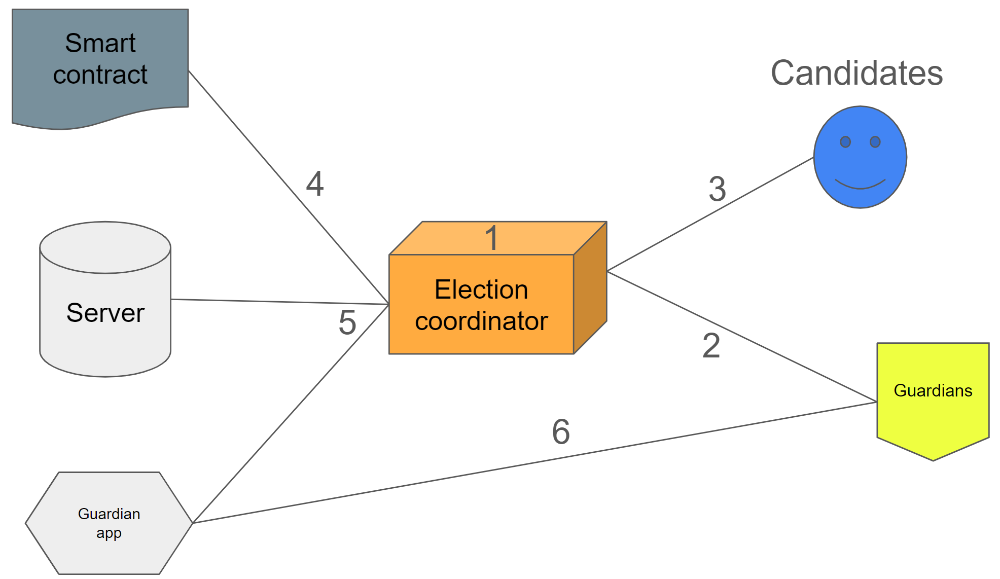
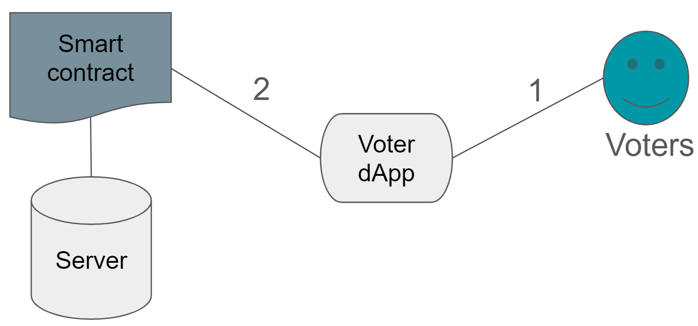
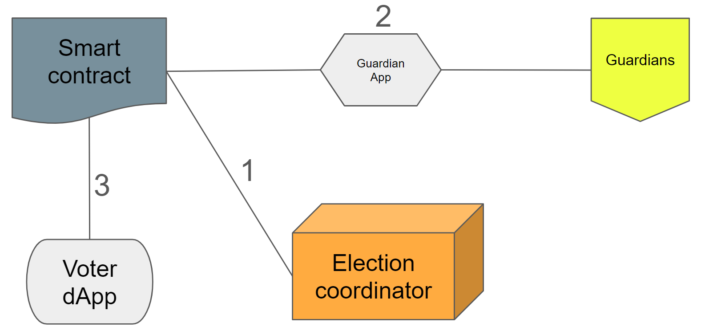

Concordium Governance Committee Elections#
Concordium Governance Committee elections are a vital part of decentralization, allowing the Concordium community to make decisions about the blockchain.
A user with multiple accounts should vote from all accounts for their vote to have maximum weight. If the same account votes multiple times, only the last vote will count.
Staked CCD, whether it is by validators or delegators, is still held in the user’s wallet, so it counts towards the weight of the vote. And CCD locked in smart contracts cannot be used to vote either. Furthermore tokens that are in a custody wallet, e.g., on a centralized exchange, will not count as part of the weight of the token owner, but as part of the weight of the custodian. It is thus important for all CCD owners who want to vote (or who don’t want custodians to vote in their name) to transfer all CCD to wallets of their own.
The voting system chosen for this election is called approval voting. The voter may choose as many candidates as they like, i.e., they assign either 0 or 1 to every candidate. In standard approval voting, all votes are added up and the candidates with the most votes get the seats. In our weighted case, every candidate that receives a vote receives the corresponding full weight of the account from which the voter was cast — the weights are not split amongst the candidates that receive a vote. For example, suppose that there are four candidates, Peppa Pig, Rebecca Rabbit, Suzy Sheep and Zoe Zebra. And suppose that Alice has 4000 CCD and votes for Peppa, Bob has 2000 CCD and votes for Rebecca and Suzy, and Charlie has 3000 CCD and votes for Suzy and Zoe. Then the final tally is 4000 votes for Peppa, 2000 for Rebecca, 5000 for Suzy and 3000 for Zoe.
The candidates with the most votes are elected. In case of a tie, which is very unlikely, a fair coin is flipped.
Guardians ensure that election result is fair as well as further decentralizing the election process. A guardian is one of a number of independent, trustworthy individuals who participate in the election to ensure that votes are encrypted before the election and decrypted after the election. Guardians may also vote in the election, as may candidates.
The diagrams and descriptions below describe the process during each phase of the election.
Before the election#
The period of time before the election is the setup phase. Several roles are involved in the setup of the election.
The Election coordinator uses the coordinator tool to get the initial weight values and initialize an instance of the election smart contract.
Each guardian sends their account address to Concordium.
Candidates are nominated and can “campaign”. Candidates can provide information such as name, an image or logo, and the URL of a site with information about their campaign. This information is shown in the voting dApp.
The Election coordinator adds the guardian addresses to the smart contract along with election parameters such as the start and end date and time, and candidates, and deploys and initializes the smart contract.
The election server is started, the indexer is started, and the Guardian app is built and released.
Guardians download the guardian app and install it. They export their account keys from their wallet and import that file to the Guardian app to generate their guardian key pair. And they generate encrypted shares for each guardian. If any invalid submissions from peers are detected, the guardian files a complaint which requires manual intervention from the election coordinator by setting up a new election.
During the election#
The period of time during the election is the election phase.
Voters using the Concordium Wallet for Web, Concordium Wallet for Mobile, or CryptoX Concordium Wallet open the dApp and cast their votes. The voter must connect their wallet and sign and submit the transaction to register it on the blockchain. For voters preferring to delegate their vote to another account (e.g., from a non-dApp enabled account in Desktop Wallet or Concordium Legacy Wallet to one with dApp connectivity), it doesn’t matter when voting power is delegated, as long as it happens within the voting “window”, i.e., between election start and end time. The latest delegation registration counts and you cannot redelegate voting power delegated to you; only your initial weight can be delegated.
The votes are registered in the smart contract and the server reads the votes from the contract.
After the election#
After the election is the tally phase.
Once the election closes, the election coordinator uses the coordinator tool to get the final weights (the initial weights plus weights after taking vote delegation into account) and compute the encrypted tally which is registered in the smart contract.
The guardians use the Guardian app to generate their decryption share of the tally and post that before the deadline specified. They then generate and register proof of correct decryption. If proof generation fails, manual intervention is required by the election coordinator to reset the tally phase with the option of excluding faulty guardians.
The decryption shares from each guardian and corresponding proofs of correct decryption are used to produce the election result, which is registered in the smart contract. The election coordinator posts the decrypted tally and voters can see the election result in the voting dApp.
Components for voting#
There are a number of components used during voting, including the coordinator tool, the voting dApp, and the Guardian application. You can explore the repository for the components <https://github.com/Concordium/concordium-governance-committee-voting>.

{kind=link}
{kind=link}
{kind=link}